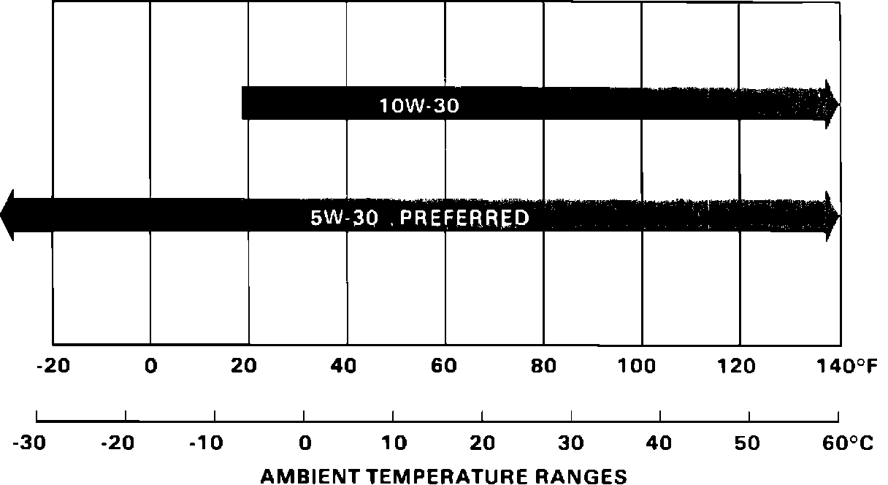

Engine Oil Recommendation
August 3, 198787-014
YEAR: 1988
MODEL: ALL
APPLICATION: ALL
Engine Oil Recommendations for 1988 Models (Supersedes 87-014, dated July 6, 1987)
Beginning with the 1988 model year, SAE 5W-30 engine oil is recommended for use in all Acura automobiles.
Select the proper viscosity oil for the climate where the vehicle is normally used from the chart.

RECOMMENDED ENGINE OIL [NEW]
"Fuel Efficient" SF/CC or SF/CD Grade Only)
[NEW] NOTE:
API service grade SF/CC or SF/CD synthetic engine oil may also be used in all Acura automobiles. However, to maintain warranty coverage during the warranty period, engine oil and oil filter changes must be performed every 7,500 miles or every 3,000 miles on cars normally used under severe driving conditions. Consult the Maintenance Schedule in your service manual for maintenance interval recommendations.